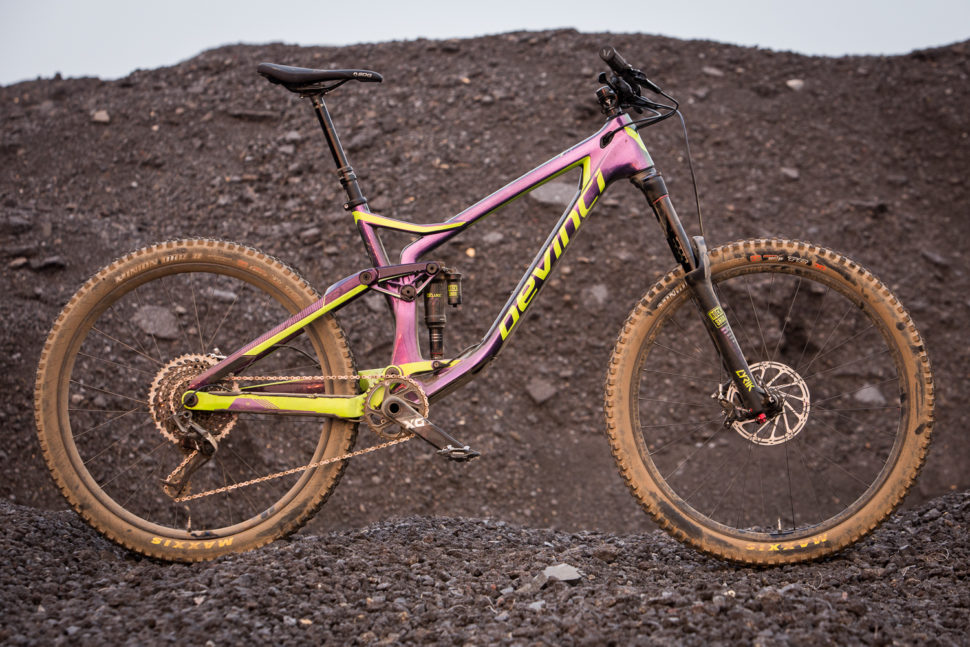
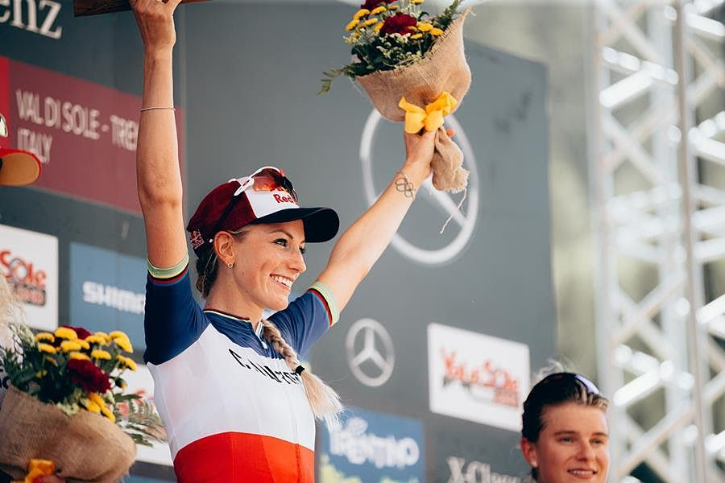
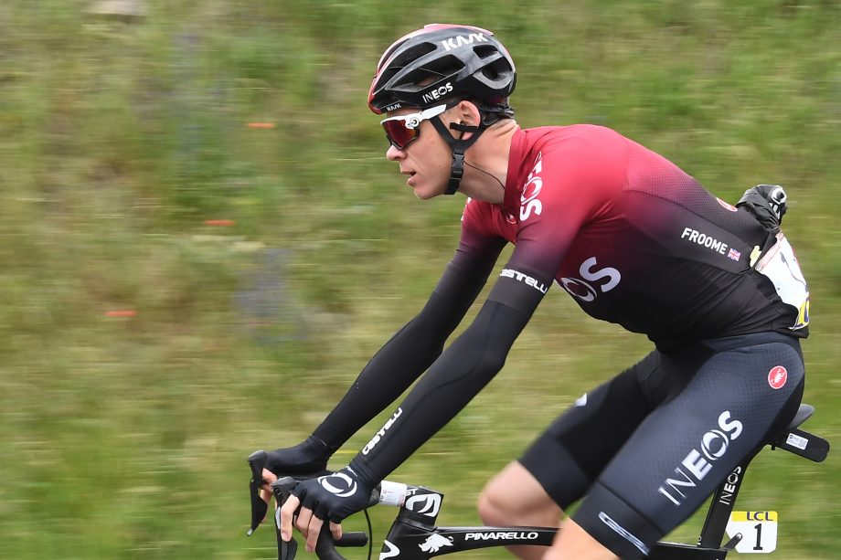

Bienvenue sur LaRecyclerie
Le meilleur site de vélos d'occasions
Les News

Devinci lance un Spartan mis à jour
Si vous suivez les Enduro World Series, vous avez peut-être aperçu le pilote Devinci Théo Galy sur ce qui ressemblait à une nouvelle version du vélo de course d'enduro de Devinci, le Spartan. Devinci a en effet mis à jour son 2014, lui donnant 170 millimètres de débattement à l'arrière et 165 à l'avant. Plus long, plus mou et plus bas, le Spartan en a encore beaucoup dans le ventre.
Vous aimez les Enduro ? Alors allez en voir plus >>>

Pauline Ferrand-Prévot subit avec succès une chirurgie de l'artère iliaque
La championne du monde de VTT Cross Country a été traitée pour l'endofibrose de l'artère iliaque pour la deuxième fois en un an.
"L'opération s'est bien déroulée.Elle a été un peu plus longue que prévu (2h) mais mon super chirurgien est satisfait!" a écrit Ferrand-Prévot dans un post sur Twitter .
Vous pouvez retrouver son univers juste ICI

Chris Froome: "Mon seul rendez-vous que je me suis fixé est le Tour de France"
Le quadruple vainqueur du Tour pourrait faire face au plus grand défi à ses espoirs d'un cinquième maillot jaune en 2020 de ses propres coéquipiers
Retrouvez les armes de guerre de votre futur Tour de France ICI